Только макеты: игровой код не менялся. Подложка — настоящий кадр проектора «Книги» (стенд e2e/book), шрифты и свитки — настоящие файлы public/. Картинки-заглушки — не боевые фото.
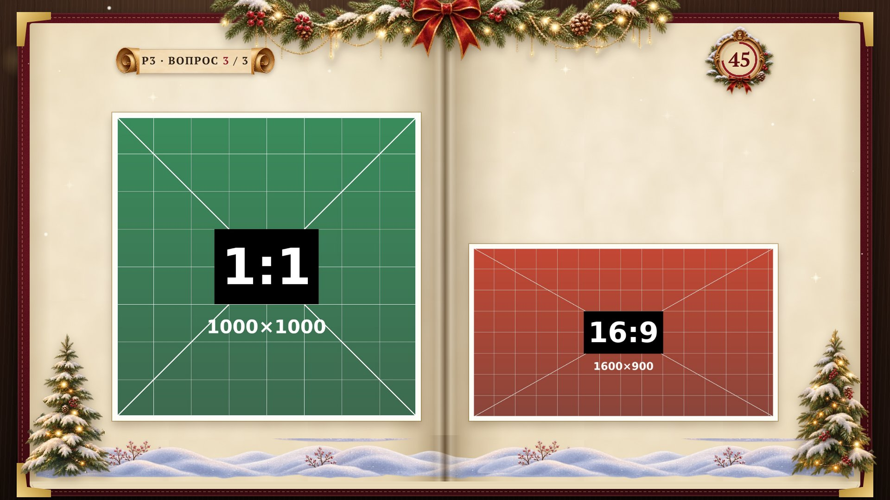
Единственный кандидат раскладки для двух картинок на развороте — pages-1|1 (каждая в своей половине, вписана по ширине): квадрат 650×650 рядом с 16:9 650×366. Правило — mediaLayout.ts:layoutCandidates (n=2), ручной раскладки нет (layoutUnsupportedReason).
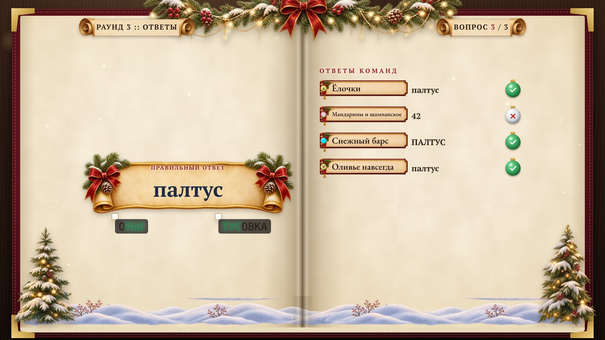
Картинки схлопнуты в 0 px: .rebus-answer = flex: 1 1 0 внутри блока ответа с авто-высотой. Тёмные плашки — figcaption (19-question-media.css: rgba(0,0,0,.68)), подсветка — .rebus-hot (#57f5c0, неон классики), в «Книге» не переопределены.
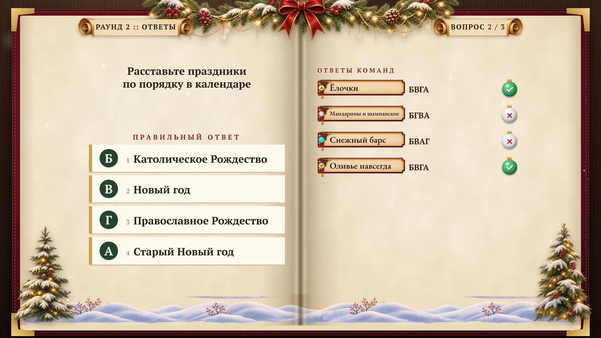
Белые плитки .oi с золотой полосой и тёмно-зелёными кружками — остаток старого оформления, не свитки; подложка «ПРАВИЛЬНЫЙ ОТВЕТ» плоская.
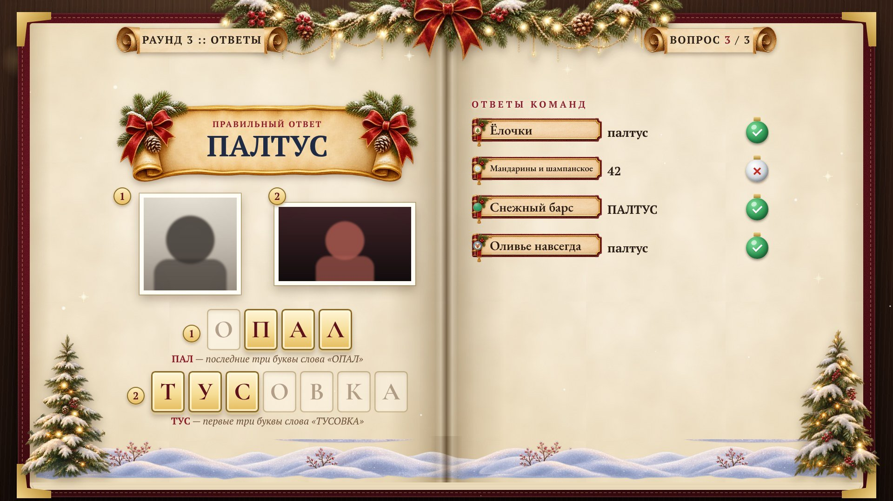
Иерархия: 1) свиток с ответом, 2) слова из пергаментных плиток (подсвеченные — золото с тёмно-красной буквой, остальные приглушены), 3) фото в одинаковых ячейках с номерами 1/2, связанными с рядами слов. Плитки крупные (72 px), на всю ширину колонки; подпись «ПАЛ — последние три буквы слова «ОПАЛ»». Меняется: ответ-разбор для ребуса идёт через общий экран; figcaption-плашки и неон .rebus-hot уходят в «Книге».
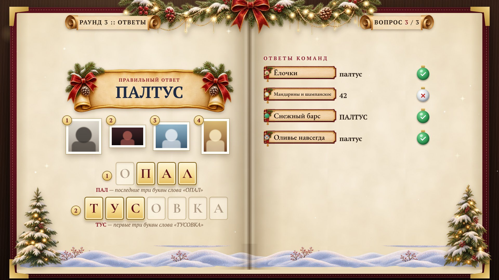
Те же ряды слов (слова есть только у картинок 1 и 2), фото — ряд из 4 равных ячеек.
замер: вне области 0, пересечений 0, текст вне плитки 0, заход на сгиб 0, рядов на одной базовой линии 4, макс. расхождение 0 px исходник HTML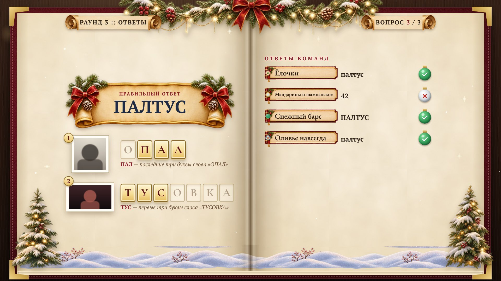
Иерархия: 1) свиток, 2) строки «фото слева, слово справа» — соответствие картинка↔слово читается без номеров; плитки мельче (56 px), фото 190×150. Лишние картинки (3–4) — полоской «ещё картинки к вопросу».
замер: вне области 0, пересечений 0, текст вне плитки 0, заход на сгиб 0, рядов на одной базовой линии 2, макс. расхождение 0 px исходник HTML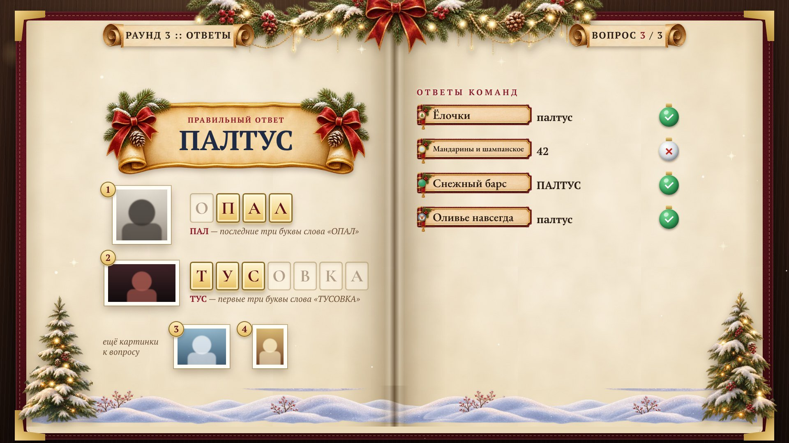
Картинки 3–4 — отдельной полоской снизу, строки слов не меняются.
замер: вне области 0, пересечений 0, текст вне плитки 0, заход на сгиб 0, рядов на одной базовой линии 2, макс. расхождение 0 px исходник HTML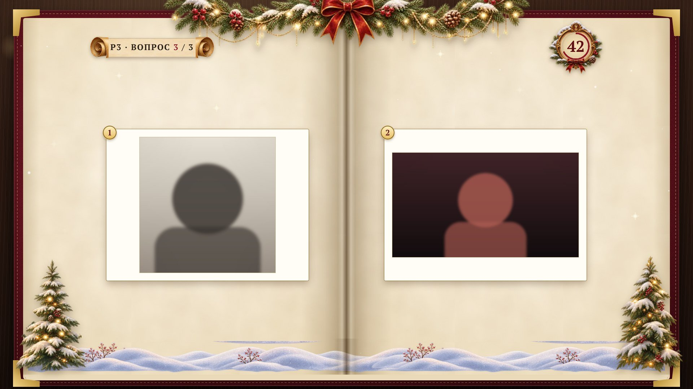
Две карточки ОДНОГО размера (560×420), картинка вписана внутри; рамка — сама ячейка (плашка в плашку нет), картинки по центру. Цена: у вертикальных/очень широких фото остаются поля.
замер: вне области 0, пересечений 0, текст вне плитки 0, заход на сгиб 0, рядов на одной базовой линии 0, макс. расхождение 0 px исходник HTML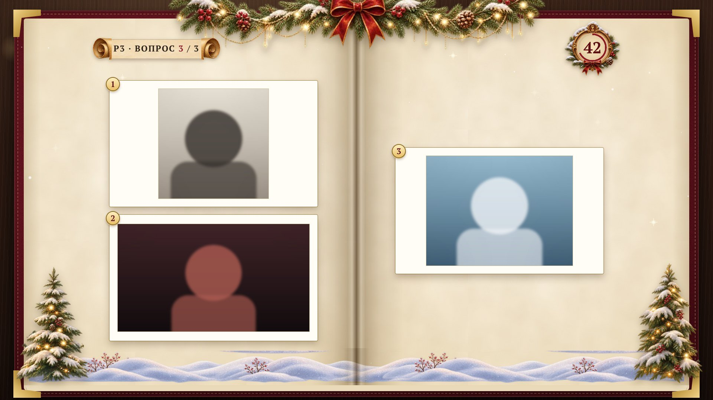
Три равные карточки 560×340: две столбцом слева, одна по центру справа.
замер: вне области 0, пересечений 0, текст вне плитки 0, заход на сгиб 0, рядов на одной базовой линии 0, макс. расхождение 0 px исходник HTML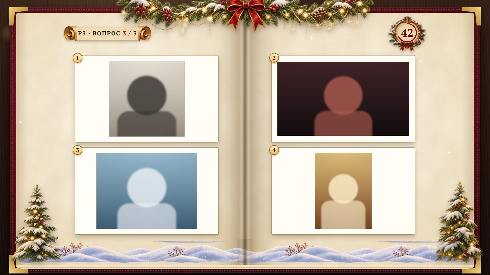
Сетка 2×2 равных карточек.
замер: вне области 0, пересечений 0, текст вне плитки 0, заход на сгиб 0, рядов на одной базовой линии 0, макс. расхождение 0 px исходник HTML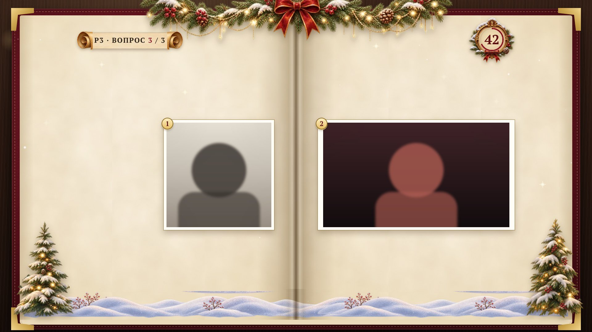
Высота обеих одинаковая (360 px, диктует широкая 16:9), верхние и нижние края на одной линии, пара прижата к сгибу; рамка — на самой картинке (как в игре). Компактнее Б1, но на странице много пустого места.
замер: вне области 0, пересечений 0, текст вне плитки 0, заход на сгиб 0, рядов на одной базовой линии 0, макс. расхождение 0 px исходник HTML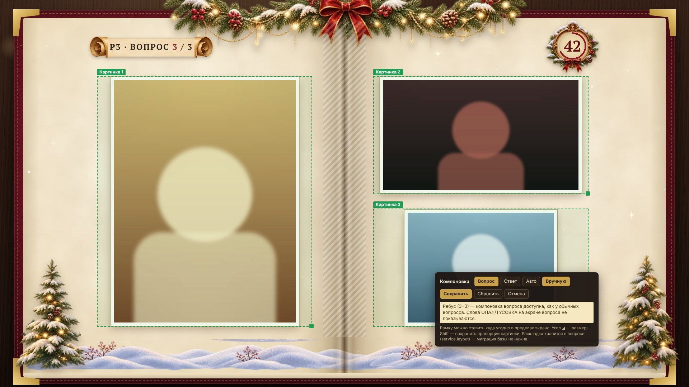
Рамки картинок задаёт ведущий (3 картинки: большая слева, две справа); всё хранится в pack_questions.service.layout — миграции базы нет.
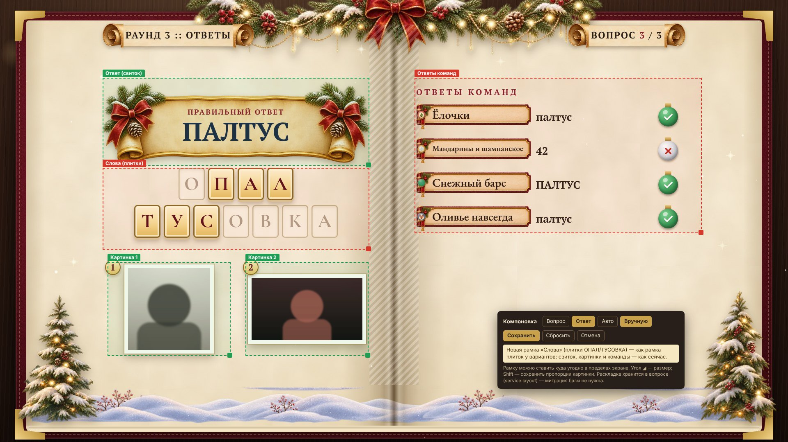
Рамки: свиток (text), слова (новая рамка плиток, по образцу tiles), картинки, ответы команд. Картинки ответа возвращены в раскладку.
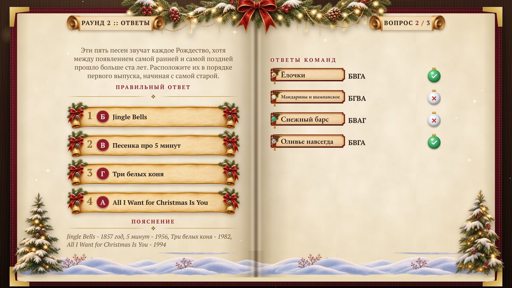
Иерархия: вопрос (мелко, до 4 строк) → «ПРАВИЛЬНЫЙ ОТВЕТ» красной разрядкой + золотой разделитель → 4 свитка hscroll-bow (золотой номер места, кружок-буква, текст на одной базовой линии) → «ПОЯСНЕНИЕ» + разделитель + курсив.
замер: вне области 0, пересечений 0, текст вне плитки 0, заход на сгиб 0, рядов на одной базовой линии 4, макс. расхождение 0 px исходник HTML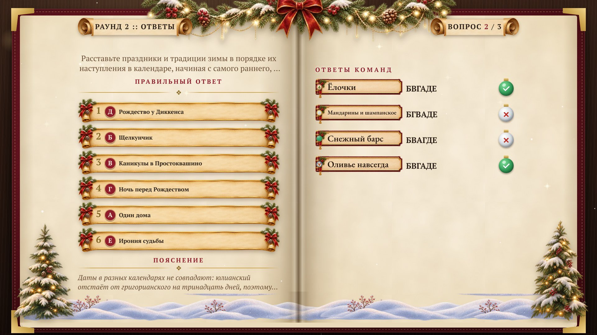
Свитки уменьшаются до --sh 60 px (кегль ≈ 18,6 px), вопрос и пояснение — не больше 2 строк; всё внутри области (замер).
замер: вне области 0, пересечений 0, текст вне плитки 0, заход на сгиб 0, рядов на одной базовой линии 6, макс. расхождение 0 px исходник HTML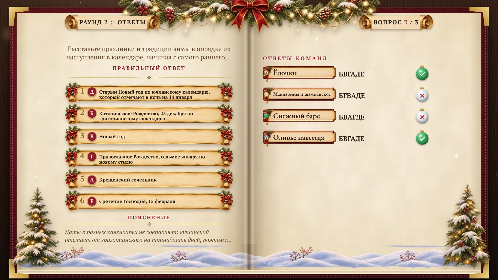
Тексты до 80 знаков — 2 строки внутри свитка (кегль 0,3·sh ≈ 18 px). Предел честный: больше 6 пунктов или 3 строк текста в такой колонке не уместить.
замер: вне области 0, пересечений 0, текст вне плитки 0, заход на сгиб 0, рядов на одной базовой линии 6, макс. расхождение 0 px исходник HTML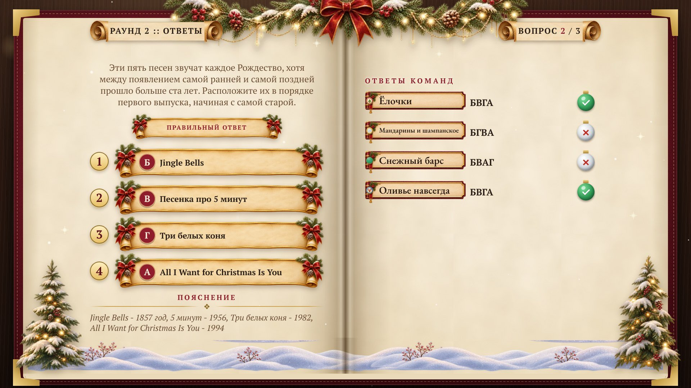
Подпись «ПРАВИЛЬНЫЙ ОТВЕТ» — маленький свиток, номер места — золотой медальон слева от свитка, внутри свитка только буква и текст. Свитки на 70 px уже.
замер: вне области 0, пересечений 0, текст вне плитки 0, заход на сгиб 0, рядов на одной базовой линии 4, макс. расхождение 0 px исходник HTML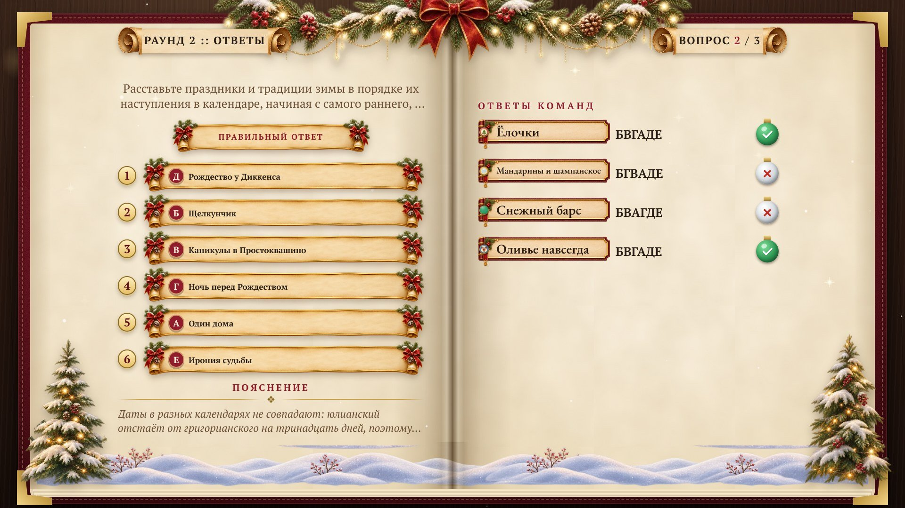
sh 56 px; свиток-подпись отнимает ~30 px, поэтому плитки мельче, чем в В1.
замер: вне области 0, пересечений 0, текст вне плитки 0, заход на сгиб 0, рядов на одной базовой линии 6, макс. расхождение 0 px исходник HTML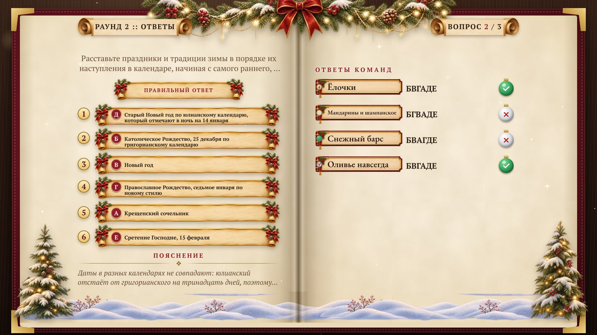
То же с длинными текстами.
замер: вне области 0, пересечений 0, текст вне плитки 0, заход на сгиб 0, рядов на одной базовой линии 6, макс. расхождение 0 px исходник HTML